Open to Data Analyst, BI, Business Analyst and System Analyst roles
Hi, I'm Reinaldy. I turn business needs and data into clear decisions.
Computer Science graduate from BINUS University. I analyze data with SQL, Python and Tableau, and I write the requirements that turn findings into working systems.
- Tools
- SQL, Python, Tableau, Excel, Google Sheets, and BRD, SRS, UML and UAT
- Education
- Computer Science, BINUS University, GPA 3.44
- Experience
- 1 year System Analyst internship
- Portfolio
- 8 data cases, 13 analysis documents and 1 ML thesis
Projects
Two kinds of work. Pick one to see its projects, then filter by tool or document. Each card shows the key result.
Business cases from RevoU and independent work, newest first. Open one for the full analysis and files.
Showing all 8 projects
-
 Capstone, Oct 2026
Capstone, Oct 2026
What predicts a bad loan at a retail bank
11.1% → 5.0%bad loan rate after two pre-loan reviews Read more -
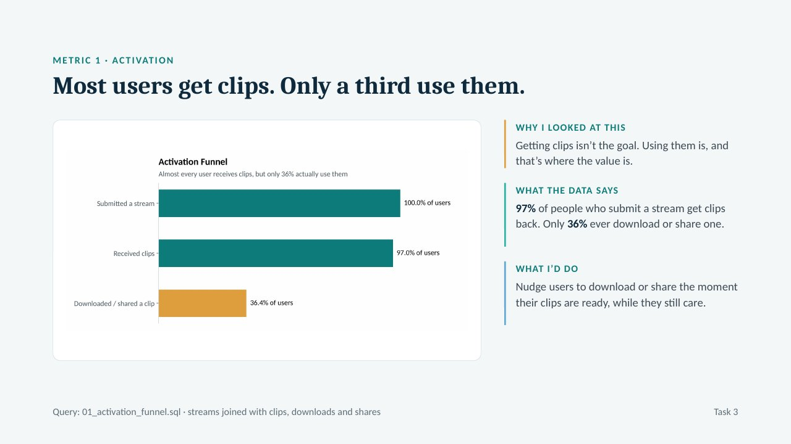
Independent, Oct 2026Which game moments users keep, and which games to support next
97% → 36%of streamers get clips, but few ever download one Read more -
 Sep 2026
Sep 2026
Tracking IDR 14.5 billion of uncollected hospital revenue
30%of unpaid revenue sits with self-pay patients, only 13% of admissions Read more -
 Sep 2026
Sep 2026
Finding which credit card customers can safely spend more
Rp261Mextra fees from 253 dormant customers safe to reactivate Read more -
 Aug 2026
Aug 2026
Which grocery categories drive revenue, and why
44%of revenue comes from the top four categories Read more -
 Jul 2026
Jul 2026
What drives an e-commerce customer's yearly spending
R² 0.927adjusted fit with five spending drivers Read more -
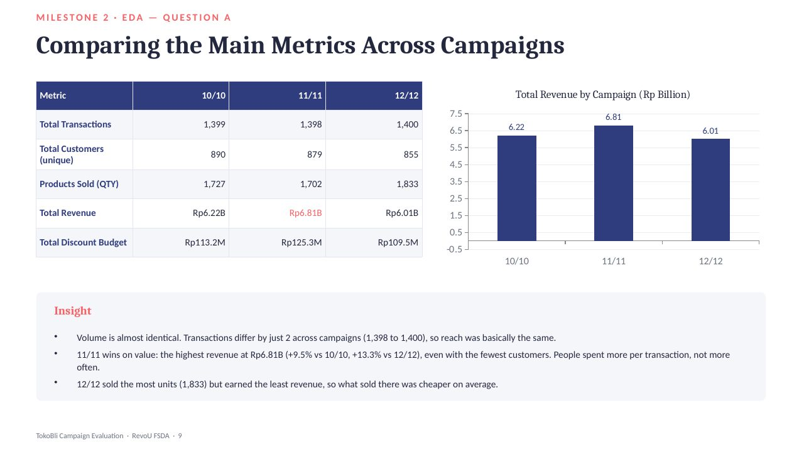
Jul 2026Evaluating twin-date campaigns and a product page A/B test
+11%order value from the new product page Read more -
 Jul 2026
Jul 2026
Why Corporate profit fell while sales grew
−56.6%Furniture sales, the only shrinking category Read more
Requirement, testing and planning documents, one card each. Open one to read the document itself.
Showing all 13 documents
LayanKita: System Analyst internship, Feb 2025 to Feb 2026
A public service app for a regency government in West Java, with an Android app for residents and a web dashboard for admins. The app, company, client, places and people are anonymized. Documents are in Bahasa Indonesia.
-
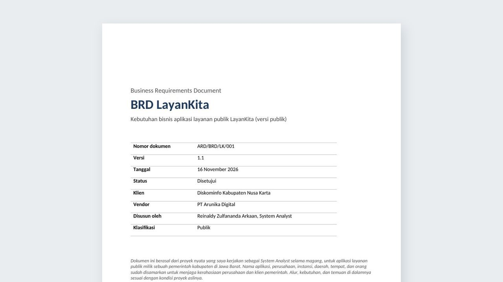
InternshipLayanKita BRD: business requirements for a public service app
24 requirementsfrom 7 problems, a benchmark and an as-is and to-be process Read more -
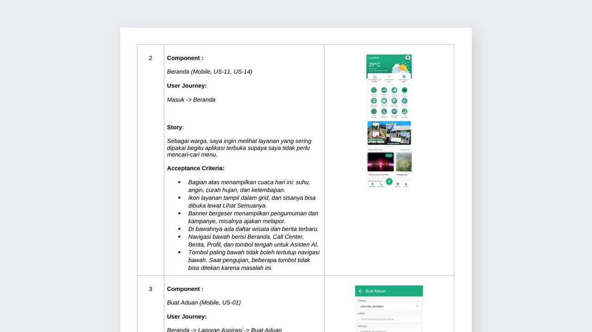
InternshipLayanKita PRD: user stories with acceptance criteria
34 user storiesfor the mobile app and web dashboard, each with its screen Read more -
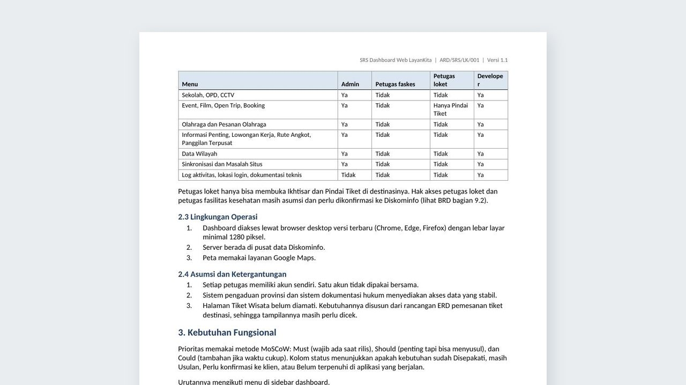
InternshipLayanKita SRS for the web dashboard
48 functional requirementsplus 17 non-functional, with MoSCoW priority Read more -
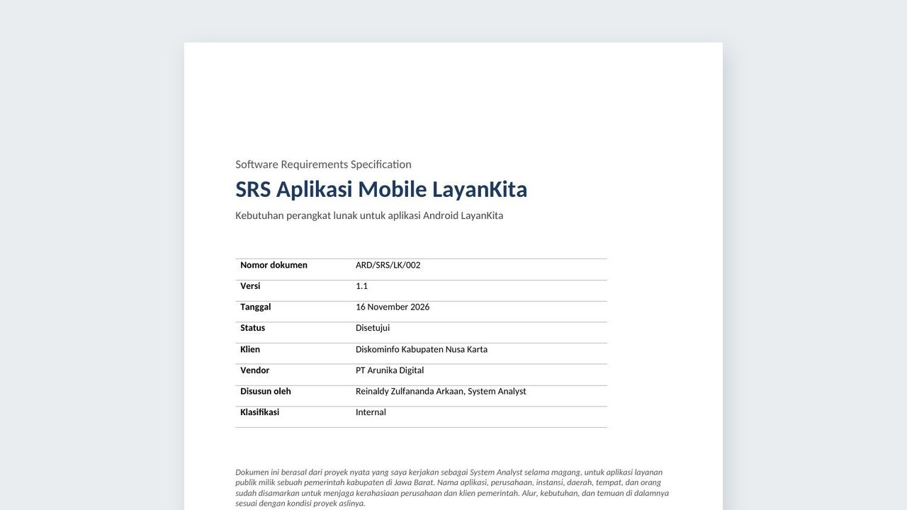
InternshipLayanKita SRS for the Android app
86 functional requirementsincluding QRIS payment and anti-scalper QR tickets Read more -
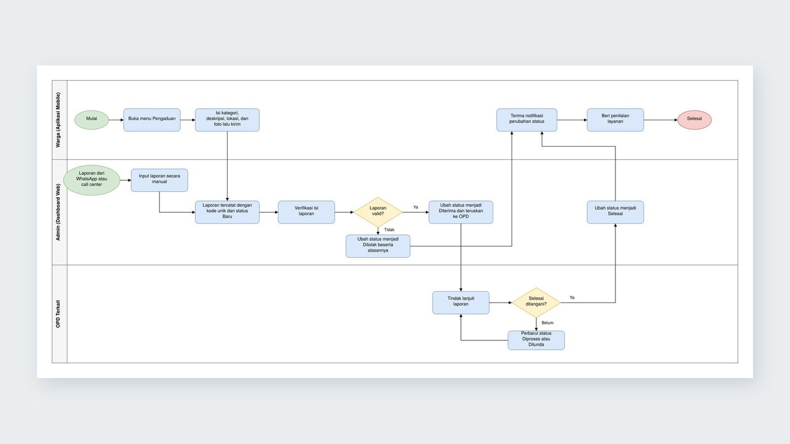
InternshipLayanKita diagrams: flowchart, UML and ERD
22 diagrams10 UML, 10 ERD and 2 business process flowcharts Read more -
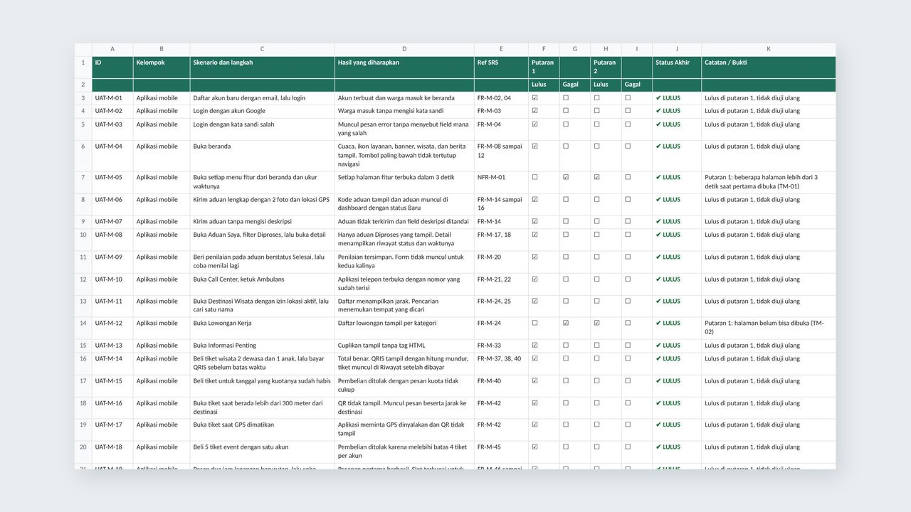
InternshipLayanKita UAT: two rounds with the client
55 of 55 passedafter round 2. 52 passed in round 1 Read more -
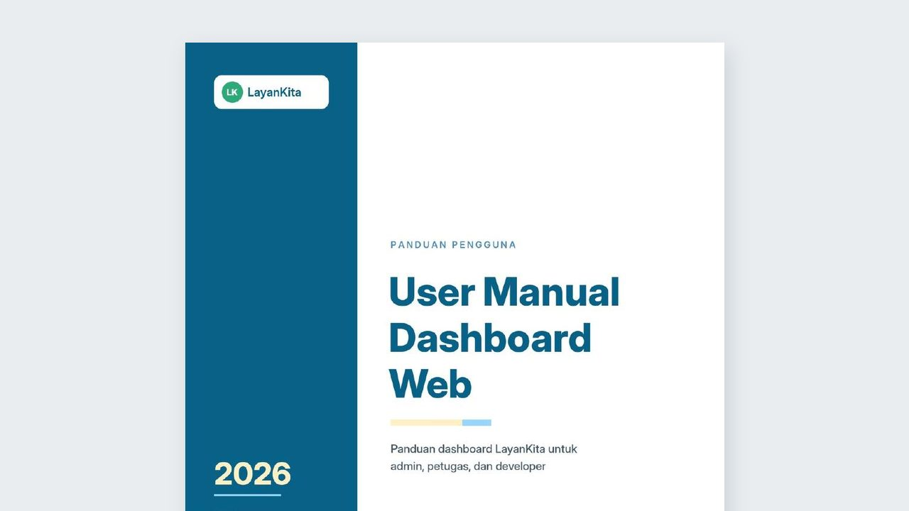
InternshipLayanKita user manuals: web dashboard and mobile app
2 manualsweb dashboard (28 pages, written by me) and mobile app (131 pages, developer team) Read more -
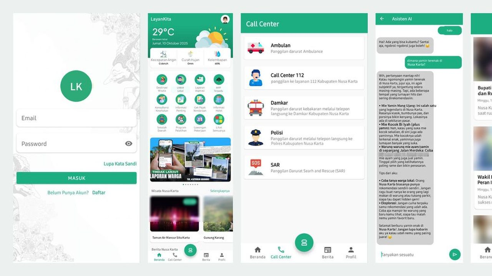
InternshipLayanKita screens: mobile app and web dashboard
67 screensanonymized screenshots plus mockups Read more
Cookaid: Product & Project Management, and Figma for UI/UX
A recipe app concept I planned and designed on my own, from charter and PRD to sprints and screens.
-
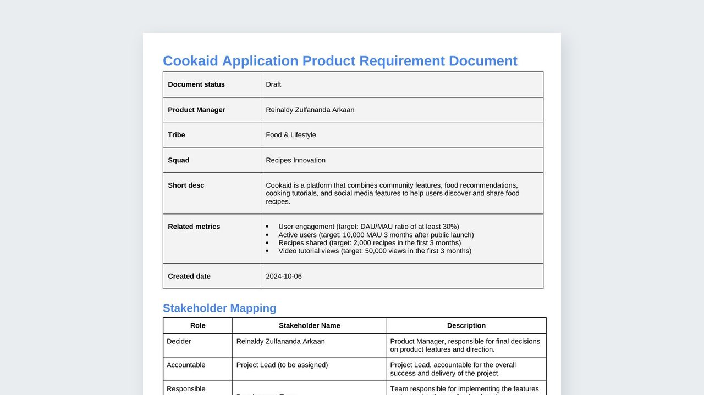
MySkill, Oct 2024Cookaid PRD: 14 user stories with acceptance criteria
14 user storieseach with a journey, acceptance criteria and a Figma screen Read more -
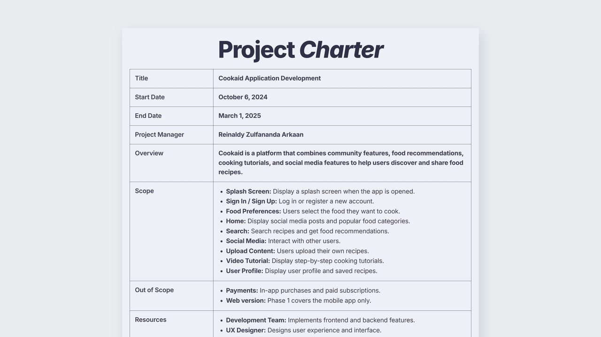
MySkill, Oct 2024Cookaid project charter: scope, team and success criteria
9 featuresin scope, with measurable targets and three named risks Read more -
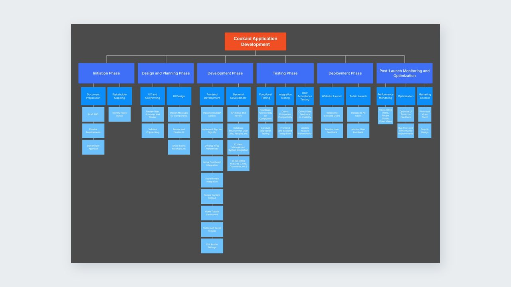
MySkill, Oct 2024Cookaid WBS and Gantt chart: six phases in a 20-week plan
20 weekssix phases and nine milestones, Oct 2024 to Mar 2025 Read more -
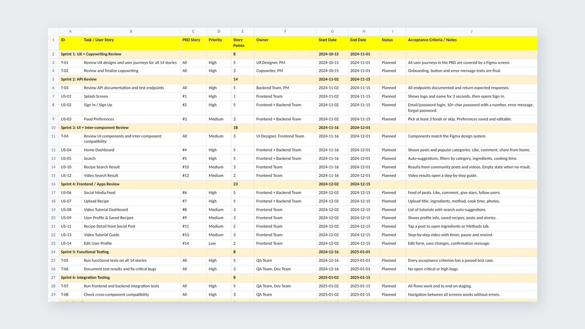
MySkill, Oct 2024Cookaid sprint backlog: 96 story points across 9 sprints
96 story pointsacross nine two-week sprints that never overlap Read more -
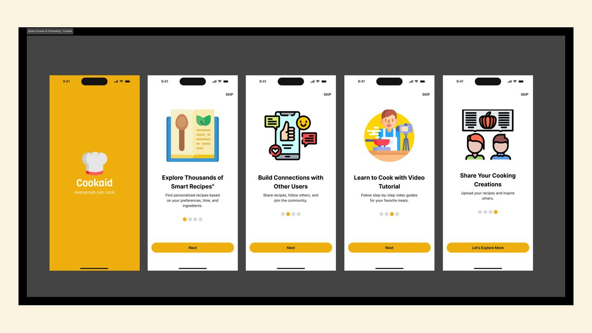
MySkill, Oct 2024Cookaid UI design: screens built from the user stories
3 flowsonboarding, sign in and profile, each tied to a PRD story Read more
Thesis
JakU: classifying Jakarta's air quality with machine learning
Compared Random Forest, XGBoost and SVM on official ISPU data, then built a Streamlit dashboard for residents. I led the model and dashboard in a team of 3.
- 97.71%
- test accuracy (XGBoost)
- 53 of 53
- Unhealthy days caught
- 0.9634
- macro F1
- 78.28
- usability score (SUS)
700 days of Jakarta air: only 14 were good.
About me
I start from who needs the answer and what they will do with it. Sometimes that answer is an analysis in SQL, Python or Tableau, sometimes it is a requirement document a developer can build from.
- Education
- BINUS UniversityComputer Science, GPA 3.44
- Experience
- System Analyst internPT. Pratama Solusi Teknologi, 1 year
- Training
- RevoU and MySkillFull Stack Data Analytics, Product & Project Management
- SQL
- Python
- Tableau
- Excel
- Google Sheets
- Statistics
- Machine Learning
- BRD and SRS
- UML
- UAT
Read more: full experience and skills
Education
- Jul 2022 to Jul 2026BINUS UniversityBachelor of Computer Science, GPA 3.44/4.00. Data Analytics specialization. Thesis on machine learning air quality classification for DKI Jakarta.
Certification
- Jul 2026 to Oct 2026Full Stack Data Analytics, RevoUSQL, Python, statistics, Tableau and a capstone project.
- Oct 2024Product & Project Management, and Figma for UI/UX, MySkillPRD, user stories, WBS, sprint planning and high-fidelity UI design. Case study: Cookaid.
Work experience
- Feb 2025 to Feb 2026System Analyst (Internship), PT. Pratama Solusi Teknologi
- Wrote BRD, SRS, PRD and a System Analysis Report for a regency government's public service app, shown here anonymized as LayanKita.
- Created 20 UML diagrams, ERDs and flowcharts, and ran UAT for 2 systems.
- Built a Random Forest model for social assistance eligibility with 90% accuracy, inside a dashboard.
- Analyzed Google Play reviews for sentiment and built 5 Node.js authentication features.
Organization and volunteering
- Nov 2022 to Apr 2026Volunteer, Teach For IndonesiaFour community and school outreach programs in Jakarta and Bogor, including a Ramadan aid distribution with Tzu Chi.
- Sep 2019 to Nov 2021Secretary, Japanese ClubActivity reports, meeting minutes, scheduling and record keeping.
Technical skills
Data Analysis
- Data Cleaning
- Exploratory Data Analysis (EDA)
- Statistical Analysis
- Regression Analysis
- Hypothesis Testing
- Customer Segmentation (RFM)
- Sentiment Analysis
- Business Problem Solving
- Campaign Performance Analysis
- Product Performance Reporting
Programming and Databases
- Python (Pandas, Scikit-learn, Matplotlib, Plotly)
- SQL (Joins, CTEs, Window Functions, Aggregations, Filtering)
- Node.js
Machine Learning
- Classification
- Clustering
- XGBoost
- Random Forest
- Support Vector Machine (SVM)
- K-Nearest Neighbors (KNN)
- Decision Tree
- K-Means
- Sentiment Analysis
Business Intelligence and Data Visualization
- Tableau
- Streamlit
- Microsoft Excel
- Google Sheets
System Analysis and Documentation
- BRD
- SRS
- PRD
- Use Cases
- UML
- ERD
- Flowcharts
- User Manuals
- System Analysis Reports
System Testing
- Functional Testing
- Cross-Device QA Testing
- User Acceptance Testing (UAT)
- Bug Documentation
Methodologies and Frameworks
- CRISP-DM
- Rapid Application Development (RAD)
- Agile
- Waterfall
- User-Centered Design
- DARCI
- Issue Tree
- System Usability Scale (SUS)
- OBIPR
- SMART
- MECE
Tools, soft skills and languages
Tools
- Google Colab
- Visual Studio Code
- Git/GitHub
- JASP
- Figma
- Draw.io
- Jupyter Notebook
- SQL Server
- RapidMiner
- BigQuery
Soft Skills
- Analytical Thinking
- Business Insight
- Problem-Solving
- Communication
- Teamwork
- Attention to Detail
Languages
- Indonesian (Native)
- English (Professional Working Proficiency)
Hiring for a data or analyst role? Let's talk.
- Emailreinaldizulfanandaarkaan@gmail.com
- WhatsApp+62 822 9747 1234
- LocationPurwakarta, West Java